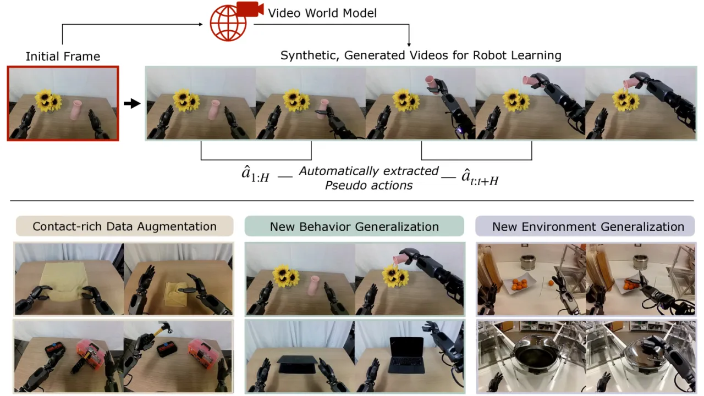
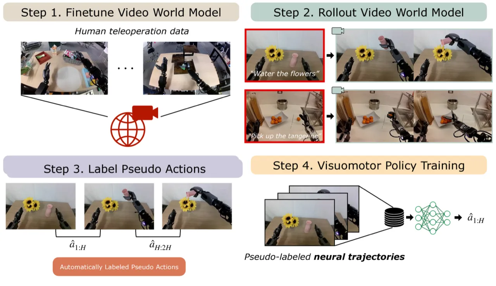
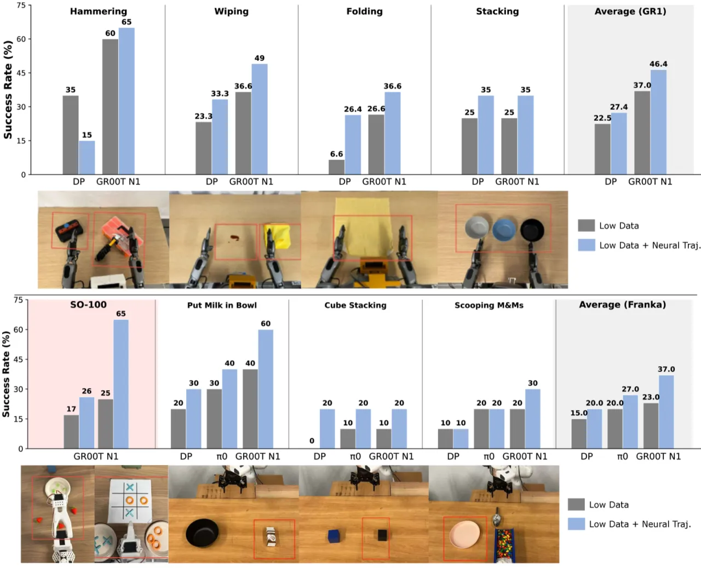
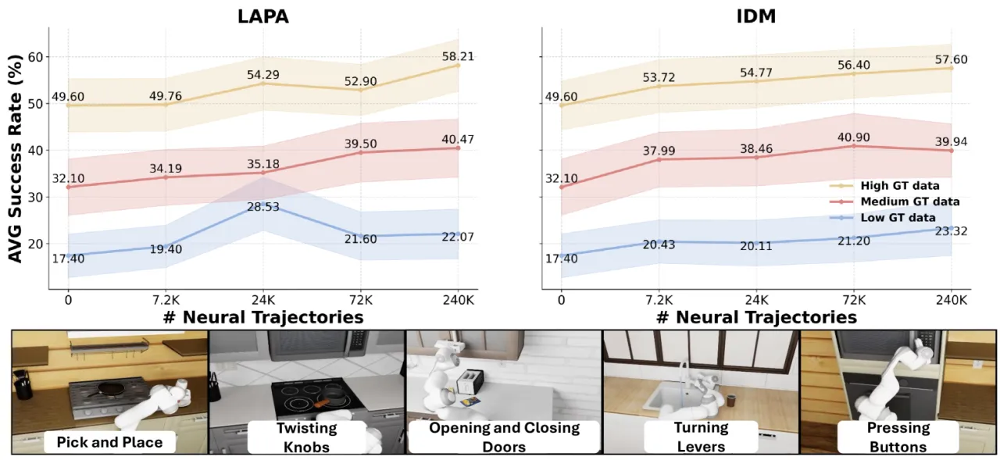

DreamGen 提出了一套四阶段流水线，利用视频世界模型（video world models）生成"神经轨迹"（neural trajectories）——带伪动作标注的合成机器人视频——以此大幅扩充训练数据。仅凭单一 pick-and-place 任务的遥操作数据，便能训练出可在 22 种全新行为和未见过的环境中泛化的策略。
机器人策略的泛化能力长期受限于数据匮乏：遥操作采集成本高昂，且单一场景的数据难以覆盖多样行为与陌生环境。如何在极少真实数据的前提下，让策略跨行为、跨环境迁移，是领域核心难题。
"DreamGen, a simple yet highly effective 4-stage pipeline for training robot policies that generalize across behaviors and environments through neural trajectories—synthetic robot data generated from video world models."

DreamGen 将视频世界模型从实时规划器转变为合成数据生成器，通过四个阶段构建"神经轨迹"：视频模型微调 → 视频生成 → 伪动作标注 → 策略训练。

以 LoRA 对预训练视频扩散模型进行 embodiment-specific 微调，使模型学会特定机器人的运动动态和手臂外观。推理时，以初始帧（机器人当前状态）和语言指令（目标行为描述）为条件，生成跨越不同环境和行为的合成机器人操作视频，构成丰富的视觉观测序列。
论文提出两种方式从生成视频中恢复伪动作：
扩散 transformer 以两帧图像为条件预测动作 chunk；采用滑动窗口策略逐帧推断，生成与视频对齐的完整动作序列。需要预先训练的 IDM 模型（需真实动作监督）。
Transformer encoder-decoder 以 VQ-VAE 目标训练，捕捉帧间视觉变化（visual delta）作为潜在动作表示，无需真实机器人动作标注，可从纯视频数据学习。
将神经轨迹（生成视频 + 伪动作）与真实遥操作数据混合，训练视觉运动策略（visuomotor policy）。实验中每任务仅需 10–13 条真实轨迹，配合 100–300 条神经轨迹，即可取得显著提升。
实验在仿真（RoboCasa 平台，24 个任务）和真实环境（GR1 人形机器人、Franka 机械臂、SO-100）上评估。核心指标为任务成功率（%）。
以 GR00T N1 为 baseline，在 GR1 人形机器人上评估：
| 评估场景 | GR00T N1 Baseline | DreamGen | 提升 |
|---|---|---|---|
| 已见环境 · 新行为（14 任务） | 11.2% | 43.2% | +32.0 pts |
| 未见环境 · 新行为（13 任务） | 0.0% | 28.5% | +28.5 pts |
个别任务中，DreamGen 在"Pour Water"、"Light Candle"、"Hit Keyboard"等行为上达到 90%–95% 成功率。
在三种真实机器人平台上，以极少真实数据配合神经轨迹：
| 机器人平台 | 任务数 | Baseline | DreamGen |
|---|---|---|---|
| GR1 人形机器人 | 4 | 37% | 46.4% |
| Franka 机械臂 | 3 | 23% | 37% |
| SO-100 | 2 | 21% | 45.5% |

在 RoboCasa 24 个任务上，神经轨迹数量与策略性能呈 log-linear 正相关：240k 神经轨迹配合 7.2k 真实数据时，平均成功率达 ~57.6%；仅用 IDM 神经轨迹（无真实数据）达 20.55%（24 任务平均）。

论文引入 DreamGen Bench 评估视频世界模型质量，包含 Instruction Following (IF) 和 Physics Alignment (PA) 两个维度（GPT 评估），并验证其与下游策略成功率的 Pearson 相关系数 >0.90。
"Tasks are relatively simple and cover a limited portion of the robot's full kinematic capabilities." 当前实验任务较为简单，尚未覆盖机器人全部运动学能力，对高自由度、长时程复杂任务的有效性有待验证。
"Generating the 240k-sample RoboCasa dataset took 54 hours on 1500 NVIDIA L40 GPUs." 大规模神经轨迹生成对算力要求极高，限制了方法在资源受限场景下的可用性。
"Method also relies on manually providing initial frames, which introduces operational overhead." 视频生成需要手工准备初始帧，增加了部署时的操作负担，难以实现完全自动化。
"Automatic evaluator used in DreamGen Bench...can occasionally hallucinate, especially when evaluating physical realism." 基于 GPT 的视频质量评估偶尔出现幻觉，特别是在物理合理性判断上，影响基准可靠性。
"Does not directly benchmark against" existing video-generation-for-robot-learning methods. 论文未与全部相关视频学习方法进行直接定量比较，结果的绝对优越性有待进一步验证。